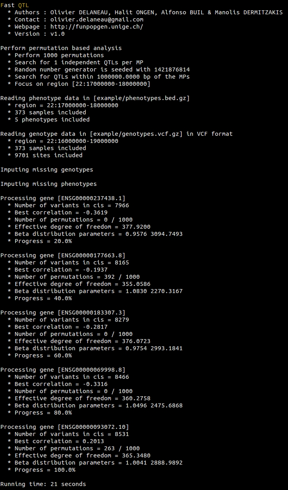
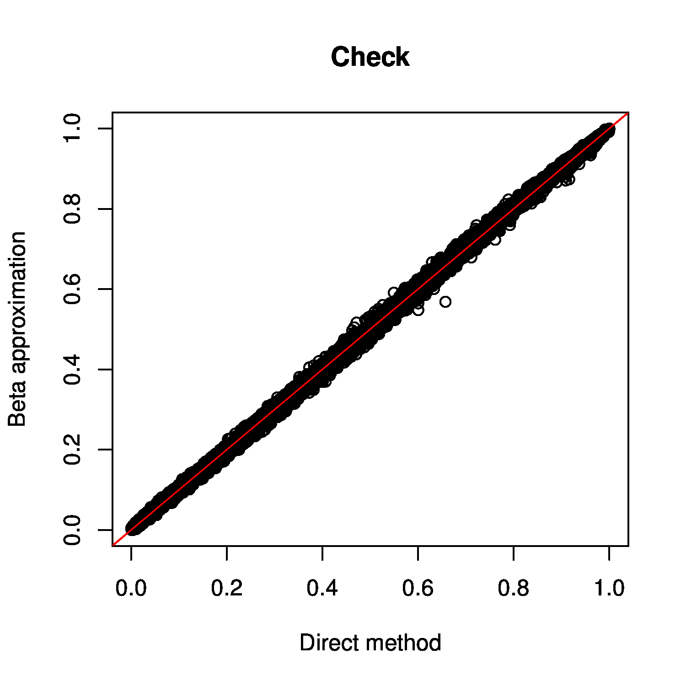

Default permutation pass
To perform a permutation based analysis of the example data set using a total of 1,000 permutations, use:
fastQTL --vcf genotypes.vcf.gz --bed phenotypes.bed.gz --region 22:17000000-18000000 --permute 1000 --out permutations.default.txt.gz
This produces this output on the screen when everything works correctly:
You can increase the number of permutations to 10,000 using:
fastQTL --vcf genotypes.vcf.gz --bed phenotypes.bed.gz --region 22:17000000-18000000 --permute 10000 --out permutations.10K.txt.gz
You can also perform an adaptive permutation pass on the example data set (i.e. with a number of permutations that varies in function of the significance). To run between 100 and 100,000 permutations, use:
fastQTL --vcf genotypes.vcf.gz --bed phenotypes.bed.gz --region 22:17000000-18000000 --permute 100 100000 --out permutations.adaptive.txt.gz
Association testing parameters
Associations between genotype dosages and phenotype quantifications are measured with linear regressions (here), similar to the R/lm function. This model assumes that phenotypes are normally distributed. If your phenotype quantifications are not normally distributed, you can force them to match normal distributions N(0, 1) by using:
fastQTL --vcf genotypes.vcf.gz --bed phenotypes.bed.gz --region 22:17000000-18000000 --permute 1000 --out permutations.quantile.txt.gz --normal
To change the cis-window size (i.e. the maximal distance spanned by phenotype-variant pairs to be considered for testing) from default value 1e6 bp to 2e6 bp, use:
fastQTL --vcf genotypes.vcf.gz --bed phenotypes.bed.gz --region 22:17000000-18000000 --permute 1000 --out permutations.window2Mb.txt.gz --window 2e6
To change the seed of the random number generator, which is particularly useful to replicate an analysis, use:
fastQTL --vcf genotypes.vcf.gz --bed phenotypes.bed.gz --region 22:17000000-18000000 --permute 1000 --out permutations.seed.txt.gz --seed 123456789
To add covariates in the linear regressions used for association testing, use:
fastQTL --vcf genotypes.vcf.gz --bed phenotypes.bed.gz --region 22:17000000-18000000 --permute 1000 --out permutations.txt.gz --cov covariates.txt.gz
The file covariates.txt.gz needs to be formatted as described here.
Excluding/Including data
To exclude samples, variants, phenotypes or covariates from the analysis, you can use one of these options:
- To exclude samples: --exclude-samples file.exc
- To exclude variants: --exclude-sites file.exc
- To exclude phenotypes: --exclude-phenotypes file.exc
- To exclude caovariates: --exclude-covariates file.exc
For instance, if you want to ignore 3 samples when analyzing the example data set, first create a text file containing the IDs of the samples to be excluded, called here file.exc:
UNR1
UNR2
UNR3
Then, run the following command line:
fastQTL --vcf genotypes.vcf.gz --bed phenotypes.bed.gz --region 22:17000000-18000000 --permute 1000 --out permutations.sub.txt.gz --exclude-samples file.exc
Similarly to these 4 options for data exclusion, you can also specify the set of samples, variants, phenotypes and covariates to be included in the analysis using the options: --include-samples, --include-sites, --include-phenotypes and --include-covariates, respectively.
Parallelization
As a first way to facilitate parallelization on compute cluster, we developed an option to run the analysis for just a chunk of molecular phenotypes. The region of interest is specified with the standard chr:start-end format. Then, FastQTL extracts all phenotypes in this region, then all genotypes given the specified cis-window size and finally perform the analysis for this data subset. For instance, to run QTL mapping only for molecular phenotypes on chr22 with coordinates between 18Mb and 20Mb, use:
fastQTL --vcf genotypes.vcf.gz --bed phenotypes.bed.gz --region chr22:18000000-20000000 --permute 1000 --out permutations.18M20M.txt.gz
This strategy is quite similar to what is commonly used for genotype imputation, where only small chunks of data are imputed one at a time in seperate jobs. However in practice, it is usually quite complicated to properly split the genome into a given number of chunks with correct coordinates. To facilitate this, we embedded all coordinates into a chunk-based system such that you only need to specify the chunk index you want to run. Then, splitting the genome into chunks, extraction of data, and analysis are automatically performed. For instance, to run analysis on chunk number 25 when splitting the example data set (i.e. genome) into 30 chunks, just run:
fastQTL --vcf genotypes.vcf.gz --bed phenotypes.bed.gz --permute 1000 --out permutations.chunk25.txt.gz --chunk 25 30
If you want to submit the whole analysis into 30 jobs on your compute cluster, just run:
for j in $(seq 1 30); do
echo "fastQTL --vcf genotypes.vcf.gz --bed phenotypes.bed.gz --permute 1000 --out permutations.txt.gz --chunk $j 30" | qsub
done
Here qsub needs to be changed according to the job submission system used (bsub, psub, etc...).
Finally, we also developed a slightly different parallelization option that, this time, allows to generate all required command lines and write into a file. Let take the same example as before, that is splitting the analysis into 10 jobs:
fastQTL --vcf genotypes.vcf.gz --bed phenotypes.bed.gz --permute 1000 --out permutations --commands 10 commands.10.txt
Now if you look at the file commands.10.txt, you'll get this:
fastQTL --vcf genotypes.vcf.gz --bed phenotypes.bed.gz --permute 1000 --out permutations.22:17517460-20748406 --region 22:17517460-20748406
fastQTL --vcf genotypes.vcf.gz --bed phenotypes.bed.gz --permute 1000 --out permutations.22:36424473-39052635 --region 22:36424473-39052635
fastQTL --vcf genotypes.vcf.gz --bed phenotypes.bed.gz --permute 1000 --out permutations.22:24407642-30163001 --region 22:24407642-30163001
fastQTL --vcf genotypes.vcf.gz --bed phenotypes.bed.gz --permute 1000 --out permutations.22:42017123-45704850 --region 22:42017123-45704850
fastQTL --vcf genotypes.vcf.gz --bed phenotypes.bed.gz --permute 1000 --out permutations.22:20792146-22307210 --region 22:20792146-22307210
fastQTL --vcf genotypes.vcf.gz --bed phenotypes.bed.gz --permute 1000 --out permutations.22:39052641-39915701 --region 22:39052641-39915701
fastQTL --vcf genotypes.vcf.gz --bed phenotypes.bed.gz --permute 1000 --out permutations.22:30163352-36044443 --region 22:30163352-36044443
fastQTL --vcf genotypes.vcf.gz --bed phenotypes.bed.gz --permute 1000 --out permutations.22:45809500-51222092 --region 22:45809500-51222092
fastQTL --vcf genotypes.vcf.gz --bed phenotypes.bed.gz --permute 1000 --out permutations.22:22337213-24322661 --region 22:22337213-24322661
fastQTL --vcf genotypes.vcf.gz --bed phenotypes.bed.gz --permute 1000 --out permutations.22:39928860-42017101 --region 22:39928860-42017101
Where, region coordinates are automatically determined given the total number of chunks provided. Then, you can submit all these commands on a cluster using for example:
while read c; do
echo $c | qsub
done | commands.10.txt
Output file format of a permutation pass
Once the analysis completed and all output file collected, you can easily concat and compress all files into a single output file to ease downstream analysis with:
zcat permutations.chunk*.txt.gz | gzip -c > permutations.all.chunks.txt.gz
After having performed a permutation pass on the data and concatenating the output files, you end up with a file with 10 columns and M lines with M being the total number of tested molecular phenotypes. For instance, if you tested 1,000 molecular phenotypes, it means that you'll get 1,000 lines in the output files. Hereafter a short example:
ENSG00000237438.1 7966 0.93436 2871.25 376.072 snp_22_17542810 25350 5.48728e-13 0.000999001 4.38131e-09
ENSG00000177663.8 8165 0.936488 3667.52 392.593 snp_22_17497295 -68549 0.000167489 0.376623 0.361675
ENSG00000183307.3 8279 1.03157 2719.43 369.406 snp_22_17587975 -14282 3.11324e-08 0.000999001 6.78199e-05
ENSG00000069998.8 8466 1.04834 2472.36 358.392 snp_22_17639837 -6340 5.01155e-11 0.000999001 1.26653e-07
ENSG00000093072.10 8531 0.934923 5838.18 406.904 snp_22_17699299 -39826 9.028e-05 0.246753 0.245706
In this file, the 10 columns correspond to:
- ID of the tested molecular phenotype (in this particular case, the gene ID)
- Number of variants tested in cis for this phenotype
- MLE of the shape1 parameter of the Beta distribution
- MLE of the shape2 parameter of the Beta distribution
- Dummy [To be described later]
- ID of the best variant found for this molecular phenotypes (i.e. with the smallest p-value)
- Distance between the molecular phenotype - variant pair
- The nominal p-value of association that quantifies how significant from 0, the regression coefficient is
- A first permutation p-value directly obtained from the permutations with the direct method. This is basically a corrected version of the nominal p-value that accounts for the fact that multiple variants are tested per molecular phenotype.
- A second permutation p-value obtained via beta approximation. We advice to use this one in any downstream analysis.
Checking that the experiment went well
To check that the beta approximated permutation p-values are well estimated, load the data in R and make the following plot:
R> d = read.table("permutations.all.chunks.txt.gz", hea=F, stringsAsFactors=F)
R> colnames(d) = c("pid", "nvar", "shape1", "shape2", "dummy", "sid", "dist", "npval", "ppval", "bpval")
R> plot(d$ppval, d$bpval, xlab="Direct method", ylab="Beta approximation", main="Check plot")
R> abline(0, 1, col="red")

The expectation is to get all the points along the diagonal as on the plot above. This shows that unsignificant beta pproximated p-values are well estimated and therefore that the estimations went well.
Controlling for multiple phenotypes being tested
Once obtained all permutation p-values for all the tested molecular phenotypes, we need now to account for the fact that many molecular phenotypes are tested whole genome in order to determine the significant QTLs. To do so, we propose here 3 approaches; from the most to the least stringent. First, load the data in R using:
R> d = read.table("permutations.all.chunks.txt.gz", hea=F, stringsAsFactors=F)
R> colnames(d) = c("pid", "nvar", "shape1", "shape2", "dummy", "sid", "dist", "npval", "ppval", "bpval")
Bonferroni correction
Look here for some details on the correction and here for some details on the R function used in this example. To apply the Bonferroni correction on the permutation p-values derived from beta approximation, use:
R> d$bonferroni = p.adjust(d$bpval, method="bonferroni")
Then, you can extract all significant MP-QTL pairs at α=0.05 and write them to a file permutations.all.chunks.bonferroni.txt using:
R> write.table(d[which(d$bonferroni <= 0.05), c(1,6)], "permutations.all.chunks.bonferroni.txt", quote=F, row.names=F, col.names=T)
Benjamini & Hochberg correction
Look here for some details on the correction and here for some details on the R function used in this example. To apply the Benjamini & Hochberg correction on the permutation p-values derived from beta approximation, use:
R> d$bh = p.adjust(d$bpval, method="fdr")
Then, you can extract all significant MP-QTL pairs with a 10% false discovery rate (FDR) for instance and write them to a file permutations.all.chunks.benjamini.txt using:
R> write.table(d[which(d$bh <= 0.10), c(1,6)], "permutations.all.chunks.benjamini.txt", quote=F, row.names=F, col.names=T)
Storey & Tibshirani correction
Look here for some details on the correction and here for some details on the R function used in this example. To install the R/qvalue package on your system, look here. Then to apply the Storey & Tibshirani correction on the permutation p-values derived from beta approximation, use:
R> library(qvalue)
R> d$st = qvalue(d$bpval)$qvalues
Then, you can extract all significant MP-QTL pairs with a 10% false discovery rate (FDR) for instance and write them to a file whole_analysis.storey.permutations using:
R> write.table(d[which(d$st <= 0.10), c(1,6)], "permutations.all.chunks.storey.txt", quote=F, row.names=F, col.names=T)